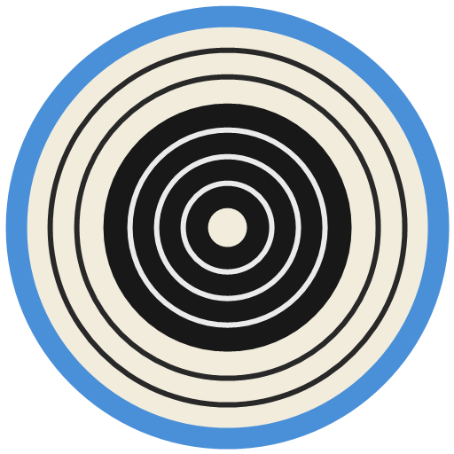

Rundenwettkampf Auswertung
Kurzanleitung · Version 1.0
Spielt einen Rundenwettkampf nach dem Schießen auf dem Fernseher ab: Schuss für Schuss, mit Übersicht und Endergebnis. Die Daten kommen direkt aus der DISAG-Datenbank (OpticScore).
⚠ Kein offizielles DISAG-Programm. Ein privates Projekt, das in keiner Verbindung zu DISAG
steht. Die Nutzung erfolgt auf eigene Gefahr: Der Ersteller übernimmt keinen Support und keine Gewährleistung, auch nicht
für Probleme, die durch das Programm entstehen können (zum Beispiel an OpticScore oder der Schießanlage).
Lizenz: MIT, siehe Datei LICENSE.
1 Einrichtung (einmalig)
Starten.cmd doppelklicken, in der Steuerung ⚙ Einstellungen öffnen, am Ende Speichern.
- Branding: Vereinsname, Logo, Farben eintragen oder Branding laden …
- 1. DISAG-Datenbank (nötig): meist C:\Disag\Daten\dboss.mdb, sonst Datei wählen … Für die Auswertung reicht das.
- 2. JSON Live (freiwillig): OpticScore meldet damit jeden Schuss sofort weiter. Das Wartebild zeigt dann an jedem Stand den Schützen und wie viele Schuss er hat, ab seinem ersten Schuss. Zuerst im OpticScore-Server unter Extras › Optionen › JSON Live einschalten. Dann hier Haken setzen und die Quelle wählen: UDP-Port (Standard 30169, kennt nur Schüsse seit Programmstart) oder Logdatei (meist OUT-JSONInterface.log, kennt alle Schüsse von heute).
- 3. Zuweisung sofort anzeigen (freiwillig): Der Schütze erscheint schon beim Zuweisen in OpticScore, nicht erst beim ersten Schuss. Dafür schreibt OpticScore pro Stand ein Protokoll (Range1.log, Range2.log …) in den Ordner RangesLog, normalerweise C:\Disag\Daten\RangesLog (neben der dboss.mdb). Stand-Protokoll einschalten klicken, OpticScore neu starten, Haken setzen. Achtung: Das stellt das Log-Level von OpticScore auf INFO, OpticScore schreibt dann deutlich mehr Logs. Bei Nichtgebrauch wieder ausschalten.
2 Starten
- Starten.cmd doppelklicken. Die Steuerung öffnet sich im Browser, unten rechts erscheint das Vereinslogo.
- 📺 Anzeige öffnen klicken, der Fernseher zeigt das Wartebild.
3 Wettkampf abspielen
- Nach dem Schießen ⟳ Wettkampf-Daten neu einlesen klicken.
- Wettkampf anklicken. Steht „⚠ Fehlende Schüsse“ auf der Karte, erst in OpticScore prüfen.
- ▶ Auswertung starten klicken.
| Taste | Was passiert |
|---|---|
| Leertaste | Start und Pause |
| ← → | Schritt zurück oder weiter |
| ↑ ↓ | vorheriger oder nächster Schütze |
| Pos1 | von vorn |
Zurück zur Liste mit ☰ Auswahl.
4 Beenden
Rechtsklick auf das Vereinslogo unten rechts › Beenden.
5 Wenn etwas nicht klappt
| Problem | Lösung |
|---|---|
| Fernseher zeigt nichts | 📺 Anzeige öffnen klicken. |
| Steuerung weg oder „Keine Verbindung“ | Doppelklick auf das Vereinslogo unten rechts, sonst Starten.cmd neu. |
| Wettkampf fehlt | Er braucht Schüsse in OpticScore. Dann ⟳ Wettkampf-Daten neu einlesen. |
| Datenbank-Fehler | In ⚙ Einstellungen die DISAG-Datenbank prüfen. |
| JSON Live ohne Daten | In OpticScore JSON Live eingeschaltet? Port oder Logdatei richtig? |
| „Stand-Protokoll: OpticScore neu starten“ | OpticScore beenden und neu starten. |
| Programm hängt | Task-Manager (Strg+Umschalt+Esc), „Windows PowerShell“ beenden, Starten.cmd neu. |